第10章
物体在给定表面上的运动；物体的摆动运动
命题46 问题32
设任意种类的向心力，力的中心以及物体在其上运动的平面均为已知，而且曲线图形的面积可以求出；求一物体以给定速度沿位于上述平面上的给定直线方向脱离一给定处所的运动。
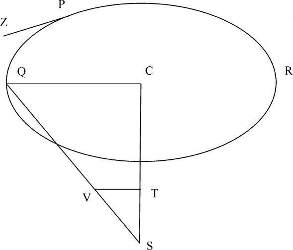
令S为力的中心，SC为该中心到给定平面的最近距离，P为由处所P出发沿直径PZ方向运动的物体，Q为沿着曲线运动的同一物体，而PQR为要在给定平面上求出的曲线本身。连接CQ，QS，如果在QS上取SV正比于把物体吸引向中心S的力，作VT平行于CQ并与SC相交于T；则力SV可以分解为二（由运动定律推论Ⅱ），力ST和力TV；其中ST沿垂直于平面的直线方向吸引物体，完全不改变它在该平面上的运动；而另一个力TV的作用与平面本身的位置相重合，直接把物体吸引向平面上已知点C；所以它使得物体在平面上运动犹如力ST被除去一样，物体就像是在自由空间中受力TV的单独作用关于中心C运动。而已知使物体Q在自由空间中关于中心C环绕运动的向心力TV，即可求出（由命题42）物体画出的曲线PQR；物体在任何时刻的位置Q，以及物体在该处所Q的速度。反之亦然。
完毕。
命题47 定理15
设向心力正比于物体到中心的距离；则所有沿任意平面运动的物体都画出椭圆，而且在相同时间里完成环绕；而沿直线运动的物体，则往返交替，在相同时间里完成各自的往复周期。
设前述命题的所有条件均成立，把在任意平面PQR上运行的物体Q吸引向中心S的力SV，正比于距离SQ；则由于SV与SQ，TV与CQ成正比，在轨道平面上把物体吸引向已知点C的力TV正比于距离CQ。所以，把出现在平面PQR上诸物体吸引向点C的力，按距离的比例，等于相同物体被各自吸引向中心S的力；所以，诸物体将在任意平面PQR上关于点C在相同时间里沿相同图形运动，如同它们在自由空间中绕中心S运动一样；所以（由命题10推论Ⅱ和命题38推论Ⅱ）它们在相同时间里或是在该平面上画出关于中心C的椭圆，或是沿通过该平面上的中心C的直线往返运动；在所有情形下完成相同的时间周期。
证毕。
附注
在弯曲表面上物体的上升或下降运动与我们刚才讨论的运动有密切关系。设想在任意平面上作若干曲线，并使之沿任意给定的通过力的中心的轴旋转，画出若干曲面；做此类运动的物体其中心总是在这些表面上。如果这些物体通过斜向上升和下降而来回摆动，则它们的运动在通过转动轴的诸平面上进行，因而也在通过转动形成曲面的诸曲线上进行。所以，对于这些情形，只要考虑各曲线中的运动就足够了。
命题48 定理16
如果一只轮子直立于一只球的外表面，并绕其轴沿球上大圆滚动，则轮子边缘任意一点自其与球接触时起所掠过的曲线路径（该曲线路径可称为摆线或外摆线）的长度，与自该接触时刻起所通过的球的弧的一半的正矢的二倍的比，等于球与轮直径之和比球的半径。
命题49 定理17
如果轮子直立于球的内表面，并绕其轴沿球上大圆滚动，则轮子边缘上任意一点自其与球接触后所掠过的曲线路径的长度，与自接触后整个时间里所通过的球的弧的一半的正矢的二倍的比，等于球与轮直径的差比球的半径。
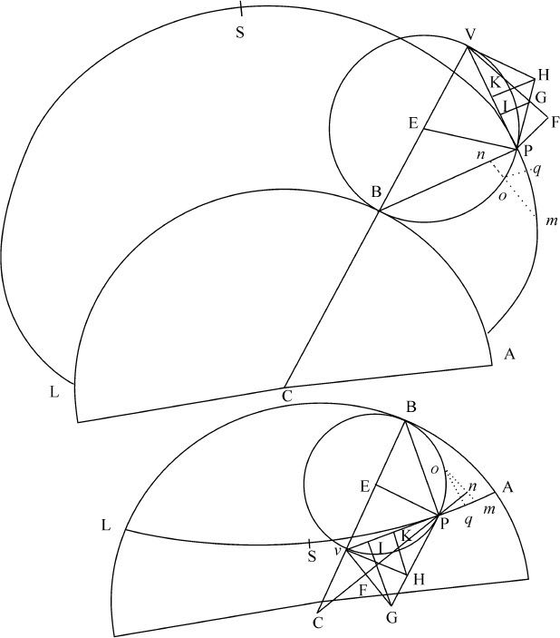
令ABL为球，C是其中心，BPV是立于球上的轮子，E是轮子中心，B是接触点，P是轮边缘上任意一点。设该轮沿大圆ABL由A经过B向L滚动，滚动方式总是使弧AB，PB相等，同时轮边缘上给定点P画出曲线路径AP。令AP为自轮子在A与球接触后画出的全部曲线路径，则该曲线路径的长度AP比弧
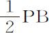
的正矢的二倍等于2CE比CB。因为令直线CE（必要时延长）与轮相交于V，连接CP，BP，EP，VP；延长CP，并在其上作垂线VF。令PH，VH相交于H，与轮相切于P和V，并使PH在G分割VF，在VP上作垂线GI，HK。由中心C为任意半径作圆nom ，与直线CP相交于n ，轮子边缘BB相交于O，曲线路径AP相交于m ；由中心V以V o 为半径作圆与VP延长线交于q 。因为滚动中总是关于接触点B转动，则直线BP垂直于轮上点P所画出的曲线AP，所以直线VP与此曲线相切于P。令圆nom 的半径逐渐增加或减小，使得它最终与距离CP相等；由于趋于零的图形Pnomq 与图形PFGVI相似，趋于零的短线段Pm ，Pn ，Po ，Pq 的最后比值，即曲线AP，直线CP，圆弧BP和直线VP暂时增量的比值，将分别与直线PV，PF，PG，PI的增量相等。但由于VF垂直于CF，VH垂直于CV，所以角HVG，VCF相等；角VHG（因为四边形HVEP在V与P的角是直角）等于角CEP，三角形VHG与CEP相似，因而有
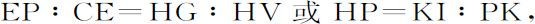
由加法或减法，
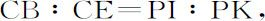
以及
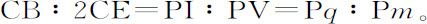
所以直线VP的增量，即直线BV－VP的增量，比曲线AP的增量，等于给定比值CB比2CE，所以（由引理4推论）由这些增量所产生的长度BV－VP与AP也比值相同。但如果BV是半径，VP是角BVP或
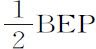
的余弦，因而BV－VP是同一个角的正矢，则在该半径为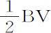
的轮子上，BV－VP等于弧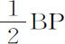
的正矢的二倍。所以AP比弧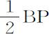
的正矢的二倍等于2CE比CB。证毕。
为便于区分，我们把前一个命题中的曲线AP称为球外摆线，而后一命题中的另一个曲线称为球内摆线。
推论Ⅰ．如果画出整条摆线ASL，并在S处二等分，则PS部分的长度比长度PV（当EB是半径时，它是角VBP正弦的二倍）等于2CE比CB，因而比值是给定的。
推论Ⅱ．摆线AS半径的长度与轮子BV直径的比等于2CE比CB。
命题50 问题33
使摆动物体沿给定摆线摆动。
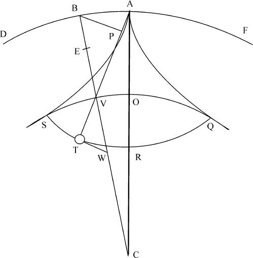
在以C为中心的球QVS内作摆线QRS，并在R加以二等分，与球表面在两边的极点Q和S相交。作CR在O等分弧QS，并延长到A，使得CA比CO等于CO比CR。关于中心C以CA为半径作外圆DAF，并在此圆内由半径为AO的轮画两个半摆线AQ，AS与内圆相切于Q和S，与外圆相交于A。由点A置一长度等于直线AR的细线，把物体T系于其上并使之这样在两个半摆线AQ，AS之间摆动：每当摆离开垂线AR时，细线AP的上部与它所摆向的半摆线APS压合，像固体那样紧贴在该曲线上，而同一根细线上未接触半摆线的其余部分PT仍保持直线状态。则重物T沿给定摆线QRS摆动。
完毕。
因为，令细线PT与摆线QRS相交于T，与圆QOS相交于V，作CV；由极点P和T向细线的直线部分作垂线BP，TW，与直线CV相交于B和W。显然，由相似图形AS，SR的作图和产生知，垂线PB，TW从CV上截下的长度VB，VW，等于轮子直径OA，OR。所以TP比VP（当
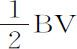
是半径时，它是角VBP正弦的二倍）等于BW比BV，或AO＋OR比AO，即（由于CA与CO，CO与CR，以及由除法AO与OR均成正比）等于CA＋CO比CA，或者，如果在E二等分BV，等于2CE比CB，所以（由命题49推论Ⅰ），细线PT的直线部分总是等于摆线PS弧长，而整个细线APT总是等于摆线APS的一半，即（由命题49推论Ⅱ），等于长度AR，反之，如果细线总是等于长度AR，则点T总是沿摆线QRS运动。证毕。
推论．细线AR等于半摆线AS，所以它与外球半径AC的比，等于相同的半摆线SR比内球半径CO。
命题51 定理18
如果球面各处的向心力都指向球心C，且在所有处所都正比于到球心的距离；当单独受该力作用的物体T沿摆线QRS摆动（按上述方法）时，所有的摆动，不管它们多么不同，其摆动时间都相等。
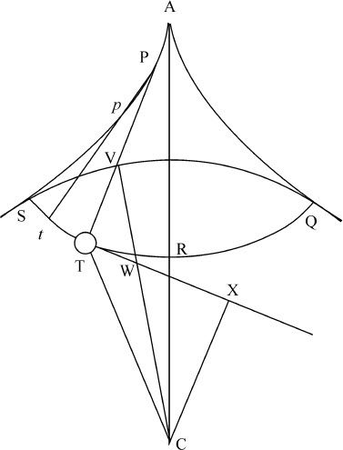
在切线TW的延长线上作垂线CX，连接CT。因为迫使物T倾向C的向心力正比于距离CT，将该力（按运动定律推论Ⅱ）分解为两部分CX，TX，其中CX把物体从P拉开，使细线PT张紧，而细线的阻力使之完全抵消，不产生其他作用；而另一个力TX是横向拉力，或把物体拉向X，使之沿摆线的运动加速。所以容易理解，正比于该加速力的物体的加速度，在每一时刻都正比于长度TX，即（因为CV与WV，TX与TW成正比，而且都是给定的）正比于长度TW，也即（由命题39推论Ⅰ）正比于摆线TR的弧长。所以，如果两个摆APT，Apt 到垂线AR的距离不相等，令它们同时下落，则它们的加速度总是正比于所掠过的弧TR，t R。但运动开始时所掠过的部分正比于加速度，即正比于运动开始时将要掠过的全部距离，因而将要掠过的余下部分，以及其后的加速度，也正比于这些部分，也正比于全部距离，等等。所以，加速度，以及由此产生的速度，以及这些速度所掠过的部分，以及将要掠过的部分，都总是正比于全部余下的距离；所以，未掠过的部分相互间维持一个给定比值，将一同消失，即两个摆动物体将在同时到达垂线AR，另一方面，由于摆在最低处所R沿摆线减速上升，在所经过各处又受到它们下落时的加速力的阻碍，因而容易理解它们在上升或下落经过相同弧长时的速度相等，因而需用时间相等；所以，由于摆线置于垂线两侧的部分RS和RQ相似且相等，两个摆在相同时间里完成其摆动的全部或一半。
证毕。
推论．在摆线上T处使物体T加速或减速的力，与同一物体在最高处所S或Q的全部重量的比，等于摆线TR的弧长比弧SR或QR。
命题52 问题34
求摆在各处所的速度，以及完成全部与部分摆动的时间。
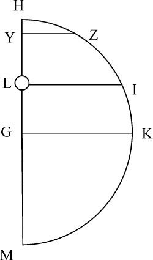
关于任意中心G，以等于摆线RS的弧长为半径画半圆HKM，并为半GK所等分。如果向心力正比于处所到中心的距离指向中心G，且在圆HIK上的力等于在球QOS表面上指向其中心的向心力，在摆T由最高处所S下落的同时，一个物体，比如L，从H向G下落；则由于作用于二物体上的力在开始时相等，且总是正比于将要掠过的空间TR，LG，所以，如果TR与LG相等，则在处所T和L也相等，因而易于理解这些物体在开始时掠过相等的空间ST，HL，以后仍在相等的力作用下继续掠过相等的空间。所以，由命题38，物体掠过弧ST的时间比一次摆动的时间，等于物体H到达L所用时间弧HI，比物体H将到达M所用时间半圆HKM。而摆锤在处所T的速度比其在最低处的R的速度，即物体H在处所L的速度比其在处所G的速度，或者，线段HL的瞬时增量比线段HG（弧HI，HK以均匀速度增加）的瞬时增量，等于纵坐标LI比半径GK，或等于
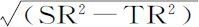
比SR。所以，由于在不相等的摆动中相同时间里掠过的弧长正比于整个摆动弧长，则由给定时间，一般可以得到所有振动的速度和所掠过的弧长。这是求解问题的第一步。现在令任意摆锤沿由不同的球内画出的不同摆线摆动，它们受到的绝对力也不同；如果任意球QOS的绝对力为V，则推动球面上摆锤的加速力，在摆锤直接向球心运动时，将正比于摆锤到球心的距离与球的绝对力的乘积，即正比于CO·V。所以，正比于该加速力CO·V的短线段HY可以在给定时间内画出：而如果作垂线YZ与球面相交于Z，则新生弧长HZ可表示该给定时间。但该新生弧长HZ正比于乘积GH·HY的平方根，因而正比于
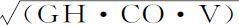
而变化。因而沿摆线QRS的一次全摆动的时间（它正比于半圆HKM，后者直接表示一次全摆动；反比于以类似方式表示给定时间的弧长HZ）将正比于GH而反比于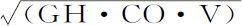
；即，因为GH与SR相等，正比于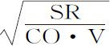
，或（由命题50推论），正比于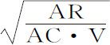
。所以，沿所有球或摆线的摆动、在某种绝对力驱使下，其变化正比于细线长度的平方根，反比于摆锤悬挂点到球心的距离的平方根，还反比于球的绝对力的平方根。完毕。
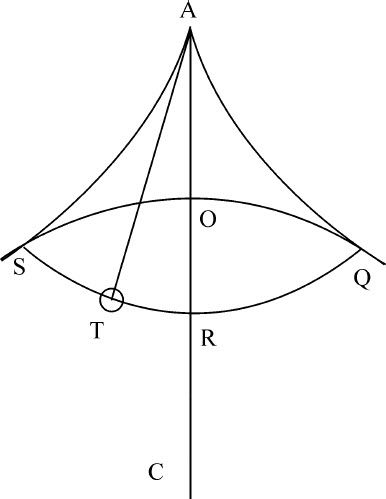
推论Ⅰ．因此可以将物体的摆动、下落和环绕时间作相互比较。因为，如果在球内画出摆线的轮子的直径等于球的半径，则摆线成为通过球心的直线，而摆动变为沿该直线的上下往返。因而可求出物体由任一处所下落到球心的时间，以及物体在任意距离上绕球心匀速环绕四分之一周所用的时间。因为该时间（由情形2）比在任意摆线上的半振动时间等于
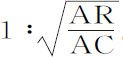
。推论Ⅱ．由此还可以推出克里斯托弗·雷恩爵士和惠更斯先生关于普通摆线的发现。因为如果球的直径无限增大，其球面将变成平面，向心力沿垂直于该平面的方向均匀作用，而我们的摆线则变得与普通摆线相同。但在此情形中介于该平面与画出摆线的点之间的摆线弧长等于介于相同平面和点之间的轮子的半弧长正矢的四倍，与克里斯托弗·雷恩爵士的发现相同。而介于这样的两条摆线之间的摆将在相等时间里沿一条相似且相等的摆线摆动，一如惠更斯先生所证明的。重物体的下落时间与一次振动时间相同，这也是惠更斯先已证明的。
这里证明的几个命题，适用于地球的真实构造。如果使轮子沿地球大圆滚动，则轮边的钉子的运动将画出一条球外摆线；在地下矿井或深洞中的摆将画出球内摆线，这些振动都可以相同时间进行。因为重力（第三编将要讨论）随其离开地球表面而减弱；在地表之上正比于到地球中心距离的平方根，在地表之下正比于该距离。
命题53 问题35
已知曲线图形的面积，求使物体沿给定曲线作等时摆动的力。
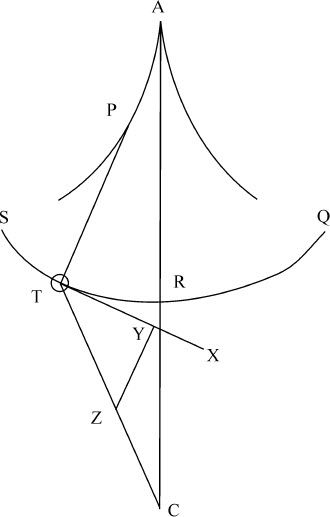
令物体T沿任意给定曲线STRQ摆动，曲线的轴AR通过力的中心C。作TX与曲线相切于物体T的任意处所，并在该切线TX上取TY等于弧长TR。该弧长可用普通方法由图形面积求得。由点Y作直线YZ垂直于切线，作CT与YZ相交于Z，则向心力将正比于直线TZ。
完毕。
因为，如果把物体由T吸引向C的力以正比于它的直线TZ来表示，则该力可以分解为两个力TY，YZ，其中YZ沿细绳PT的长度方向拉住物体，对其运动变化完全没有作用，而另一个力TY直接沿曲线STRQ方向对物体的运动加速或减速。所以，由于该力正比于将要掠过的空间TR，掠过二次摆动的两个成正比部分（一个较大，一个较小）的物体的加速或减速，将总是正比于这些部分，因而同时掠过这些部分。而在相同时间内连接掠过正比于整个摆程的部分的物体，将在相同时间内掠过整个摆程。
证毕。
推论Ⅰ．如果物体T由直细绳AT悬挂在中心A，掠过圆弧STRQ，同时受平行向下的任意力的作用，该力与均匀重力的比等于弧TR比其正弦TN，则各种摆动的时间相等。因为，TZ，AR相等，三角形ATN，ZTY相似，所以TZ比AT等于TY比TN；即，如果均匀的重力由给定长度AT表示，则使摆动等时的力TZ比重力AT等于与TY相等的弧长TR比该弧的正弧TN。
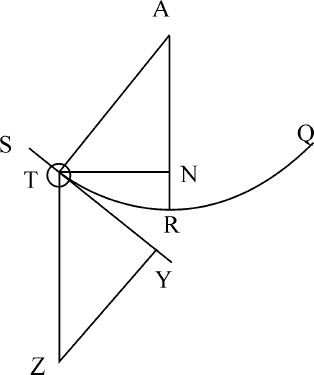
推论Ⅱ．在时钟里，如果通过某种机械把力加在维持运动的摆上，并将它与重力这样复合，使得指向下的合力总是正比于一条直线，该直线等于弧TR与半径AR的乘积除以正弦TN，则整个摆动具有等时性。
命题54 问题36
已知曲线图形的面积，求物体沿着位于经过力的中心的平面上的曲线在任意向心力作用下上升或下降的时间。
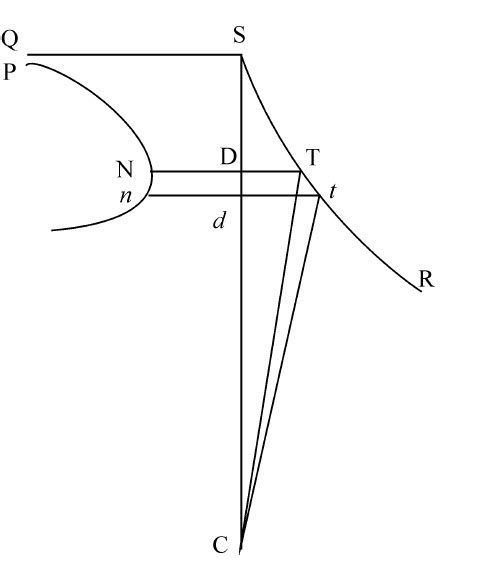
令物体由任意处所S下落，沿着经过力的中心C的平面上的给定曲线STt R运动。连接CS，并把它分为无数相等部分，令Dd 为其中之一。以C为中心，以CD，Cd 为半径作圆DT，dt 与曲线STt R相交于T和t 。由于向心力的规律已给定，物体开始下落的高CS也已给定，则物体在任意其他高度CT的速度可以求出（由命题39）。而物体掠过短线段Tt 的时间正比于该线段，即正比于角t TC的正割而反比于速度。令正比于该时间的纵坐标DN在点D垂直于直线CS，由于Dd 已给定，则乘积Dd ·DN，即面积DNnd ，将正比于同一时间。所以，如果PNn 是点N连接接触的曲线，其渐近线SQ与直线CS垂直，则面积SQPND将正比于物下落经过曲线ST所用的时间；所以求出该面积也就求出了时间。
完毕。
命题55 定理19
如果物体沿任意曲线表面运动，该表面的轴通过力的中心，由物体作轴的垂线；并由轴上任意给定点作与之相等的平行线：则该平行线围成的面积正比于时间。
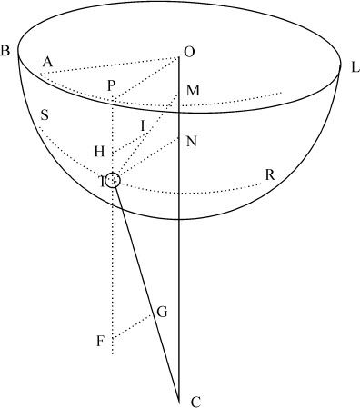
令BKL为曲线表面，T是在其上运动的物体，STR是物体在同一表面上掠过的曲线，S是曲线的起点，OMK是曲线表面的轴，TN是由物体作向轴的垂线；OP是由轴上给定点O做出的与之相等的平行线；AP是旋转线OP所在平面AOP上一点P掠过的路径；A是该路径对应于点S的起点；TC是由物体作向中心的直线；TG是其上与使物体倾向于中心C的力成正比的部分；TM是垂直于曲面的直线，TI是其上正比于物体压迫表面的力的部分，该力又受到表面上指向M的力的反抗；PTF是平行轴且通过物体的直线，而GF，IF是由点G，I向它所作的垂线且平行于PHTF。则由半径OP作运动开始后掠过的面积AOP，正比于时间。因为，力TG（由运动定律推论Ⅱ）分解为两个力TF，FG；而力TI分解为力TH，HI；但力TF，TH作用在与平面AOP相垂直的直线PF方向上，对垂直于该平面方向以外的运动变化无影响。所以，物体的运动，就其在平面位置相同方向上而言，即画出曲线在平面上投影AP的点P的运动，如同力TF，TH不存在一样，而物体的运动只受力FG，HI的作用；即与物体在平面AOP上受指向中心O的向心力作用画出曲线AP一样，该力等于力FG与HI的和。而受该力作用所掠过的面积AOP（由命题1）正比于时间。
证毕。
推论．由相同理由，如果物体受指向两个或更多位于同一条直线上CO上的中心的若干力的作用，并在自由空间中掠过任意曲线ST，相应的面积AOP总是正比于时间。
命题56 问题37
已知曲线图形面积，以及指向一给定中心的向心力的规律，和其轴通过该中心的曲面，求物体在该曲面上以给定速度沿曲面上的给定方向离开给定点所画出的曲线。
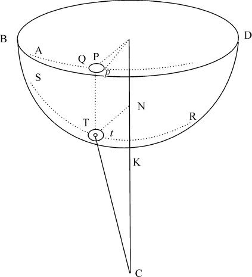
保留上述图形，令物体T离开给定处所S，沿位置已定的直线方向，进入要求的曲线STR，其在平面BDO上的正交投影是AP。由物体在高度SC的速度，可以求出它在任意高度TC的速度。从该速度令物体在给定时刻掠过其轨迹的一小段Tt ，它在平面AOP上的投影是Pp 。连接Op ，并在曲面上关于中心T以Tt 为半径作一个小圆，该圆在平面AOP上的投影是椭圆p Q。因为该小圆Tt 的大小，以及它到轴CO的距离TN或PO已给定，椭圆p Q的形状、大小以及它到直线PO的距离也就给定。由于面积POp 正比于时间，而时间已给定，因而角POp 也给定。所以椭圆与直线Op 的公共交点，以及曲线投影APp 与直线OP的夹角OPp 都可以求出。而由此（比较命题41与其推论Ⅱ）即易于看出确定曲线APp 的方法。然后由若干投影点P向平面AOP作垂直线PT与曲面相交于T，即可得到曲面上各点T。
完毕。